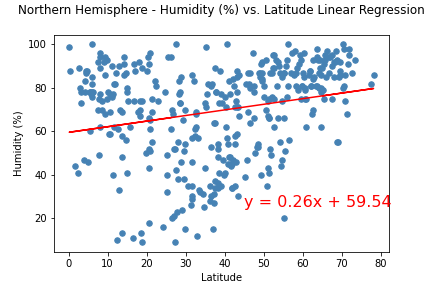
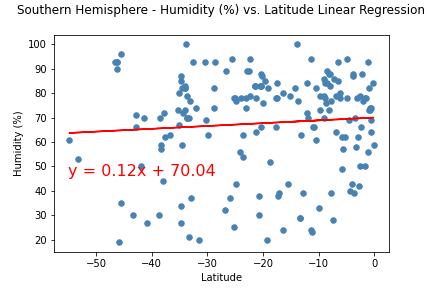

Humidity

With our current analysis, it is difficult to find any obvious correlation between latitude and humidity. There is a clear band of many data points at 100% humidity, and there do seem to be strong clusters of high humidity around the equator and in some other areas (eg. a strong band of 0% humidity at latitude > 60). Further analysis is required.
Heatmap that displays the Humidity for every City
No relation between Humidity and Latitude could be identified.
Analysing Northern Hemisphere and Southern Hemisphere Separately
In this analysis, there is no strong correlation between Latitude and Humidity in the northern hemisphere.

There is no correlation between Latitude and Humidity in the southern hemisphere either.